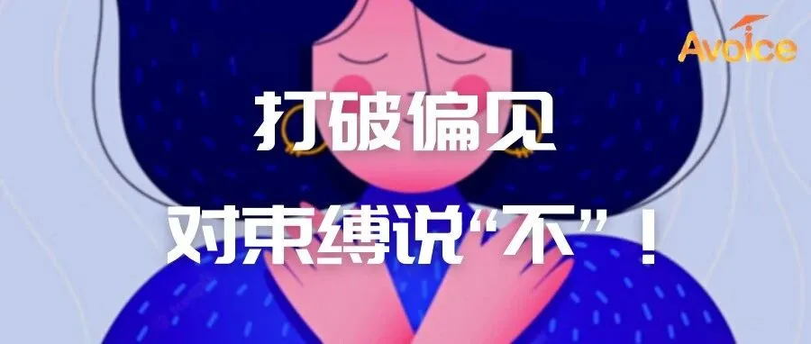
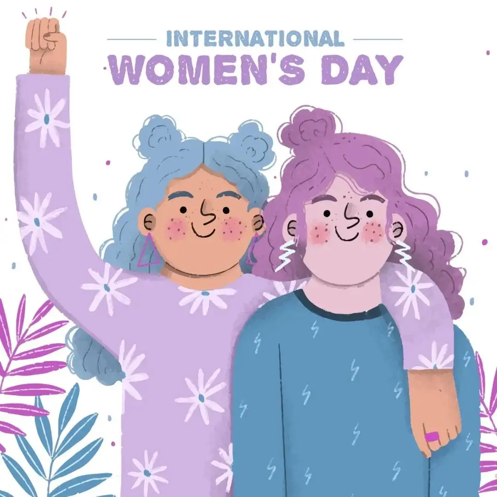
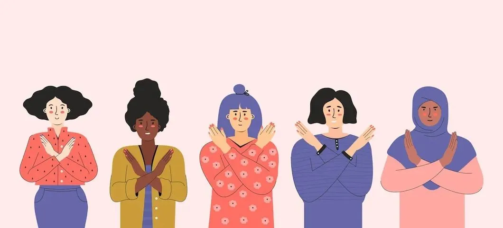
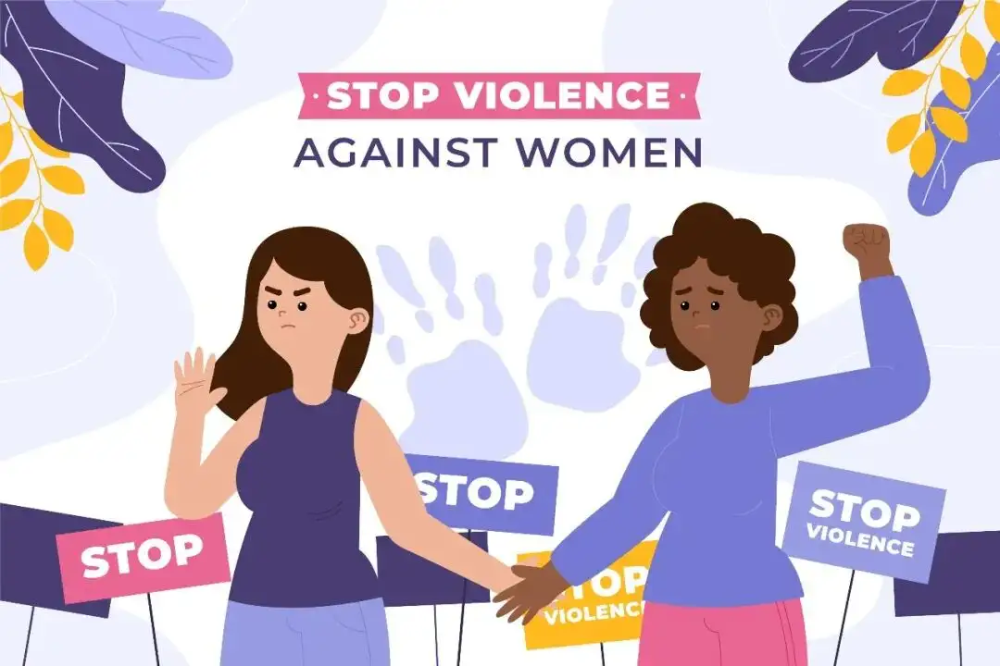
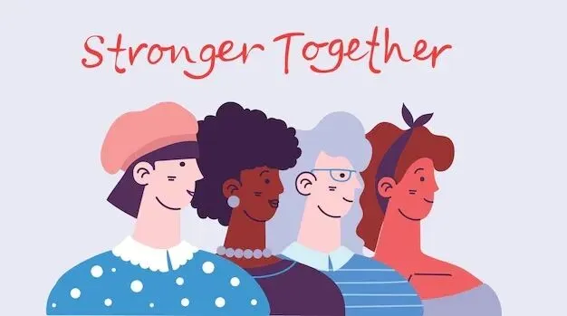
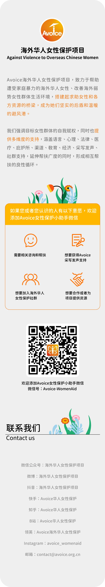

每年的国际妇女节（International Women’s Day）都会发布一个与女性相关的主题。2022年的主题为“打破偏见”#BreaktheBias，那些致力于消除偏见、打破刻板印象、拒绝性别歧视的人们，可以摆出#BreaktheBias姿势——双臂交叉于胸前，表示向一切偏见说“不”。

那么，我们应当如何打破偏见呢？
除了个人的勇气，还有外部环境的支持。
Sally是一位生活在荷兰的华人女性，她因为丈夫家暴而提出离婚。在办理离婚手续的过程中，由于荷兰语不够流利，Sally受到了律师的歧视，不仅对她的态度很差，而且也没有提供任何实质性的帮助。因此，她不得不聘请了另一位可以用英语交流的律师，但需要支付每小时250欧元（约合人民币1980元）的咨询费。除了律师，法官、儿童保护机构等这些本应该摒弃偏见、践行公正的工作人员，也会因为Sally的人种、肤色、无法用荷兰语沟通等问题，而对她差别对待。
另一方面，虽然Sally争取到了孩子的抚养权，但是前夫也有探视孩子的权利。这导致Sally在离婚后还不得不与他接触，受到前夫一家人的短信骚扰和语言辱骂。他们甚至在孩子面前诋毁Sally，称她为“小偷”。Sally为了孩子，无法“用更刚强的态度面对他（前夫）”，只能维持“面子上过得去”的局面。
虽然这些事情已经过去几年，Sally也逐渐走出了当时的阴影，但是这段经历让她深知“找到同伴，找到组织”的重要性。Avoice海外华人女性保护项目（Against Violence to Overseas Chinese Women Program，以下简称Avoice）为Sally提供了维权后的咨询与帮助。Sally也加入了Avoice，用她的经验和能量帮助更多遭受伤害的海外华人女性。
对于身处海外的华人华侨女性来说，语言文化、陌生环境、外来身份等多重问题导致她们更容易遭受各种各样的偏见。Sally的案例尤其突出了这一点——移民或外来背景让她受到歧视；语言的限制，让她不得不支付更高的律师咨询费；陌生的环境导致她在面对冲突时，会更多地选择忍让。
甚至于，“母职”——社会长久以来对于母亲的期待，也在某种意义上构成偏见，困住了Sally。她对孩子的感情和思虑、她的“牺牲”和忍耐，反而给了施暴者攻讦她的机会。
在Sally的故事中，她所受到的良好教育和从事的工作，是她得以成功维权的重要因素之一。如果没有收入，那么Sally将难以支付律师的咨询费——她可能需要更多时间来维权，甚至可能无法离婚，一直深陷于家暴的阴影中。Sally的一位女性朋友就是如此。她嫁给一名荷兰人后，就在家当全职主妇。她遭受丈夫的殴打，却为了孩子苦苦忍耐。她被丈夫夺去护照，被囚禁在家中，却因为语言不通无法寻求帮助；更因为经济问题，不得不放弃对孩子的抚养权。
长久以来，社会对于家务劳动价值的轻视，对于妻子和母亲角色的规范——女性应当顺从听话，为了家庭奉献等传统观念——所有这些偏见都让家庭暴力的受害者，彷佛被笼进了天罗地网中，难以逃脱、无法逃离。
值得庆幸的是，越来越多的组织和机构开始注意到女性所面临的困境。Avoice建立的初衷，就是想要帮助遭受家庭暴力的海外华侨华人女性——提供语言支持、法律支持、心理支持、社群支持等服务，并且Avoice搭建各国中文救助网络信息库，帮助身处海外的华侨华人女性寻找当地合适的救助机构。
除此以外，Avoice还会倾听家暴受害者的遭遇，记录她们的真实感受，分享她们自救的经验与方法，不让受害者的声音被埋没。

生活在比利时的“雯”曾遭受过严重的家暴，对方甚至在她怀孕的情况下殴打她。2020年4、5月，雯认识了Avoice。在比利时海外互助群中，她还“认识了很多的女性，听到了她们的遭遇……各种各样的遭遇都有，那些所有不公平的对待，原来你也有，我也有，她也有。” 在这里，女性之间互相帮助，互相倾听，互相治愈。
正如前文所说，反抗偏见所需要的，除了勇气，还有外部环境的支持。Avoice社区让许多女性都意识到：她们是命运共同体。 Sally、Sally朋友和雯的遭遇，她们在求助时遭受的偏见、歧视和不平等对待，已经、正在或者将来都可能发生在每一个女性身上。
女性在面对偏见的时候，她们是脆弱的；但同时，她们也是强大的，因为“打破偏见”这条路上，她们从来都不是孤独的。
2015年1月，斯坦福大学性侵案震惊全美，受害者化名为“埃米莉”勇敢地反对法庭的不公审判，在这个案件的影响下，美国加州罢免了庭审法官并改变性侵立法。2019年，“埃米莉”出版了《知晓我姓名》一书， 她不再隐藏在化名之后，而是向所有人宣告——她是香奈儿·米勒，是一个华裔女孩，中文名叫张小夏。
除了脱去化名，米勒还在书中详细记录了性侵的经过、漫长复杂的取证和诉讼过程，以及伤害发生后每一处微小的心态、情绪和细节变化。对于受害者而言，反复回忆伤害如何发生、分析情绪的起伏回落、审视内心的细微变化，无疑是对身心的巨大损耗。但是，米勒依然选择这么做，她的文字具有一往无前的力量，因为她不仅仅记录自己的故事，更是为所有“失语”的受害者发声。
作为女性，我们共享着相似的命运，也无时无刻不感受到无所不在的偏见。然而，幸运的是，我们有香奈儿·米勒、谷爱凌、张桂梅等所有这些榜样，她们冲破偏见的藩篱，也为所有女性带去勇气和希望。 “有一分热，发一分光，就令萤火一般，也可以在黑暗里发一点光。”聚集起来的萤火，最终能够成为炬火，照亮所有人类。

文字|Avoice Team
排版|张雯睿
图片|pinterest、Freepik
